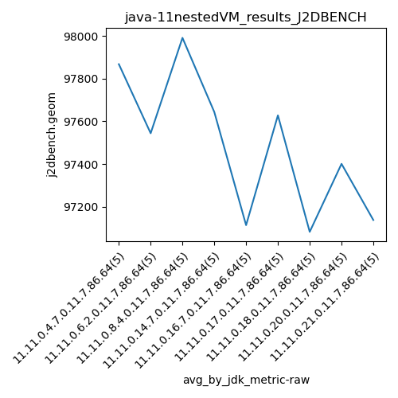
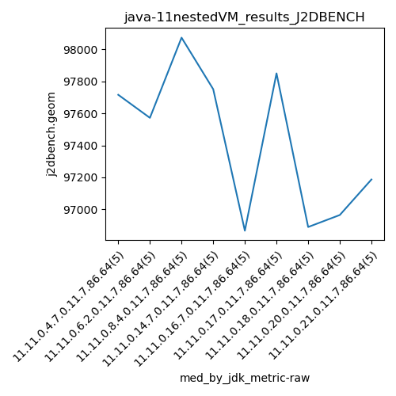

java-11 J2DBENCH
Context at bottom
/home/jvanek/git/benchmarks-in-nested-virtualisation-toolchain/final_results/nestedVM_results/nestedVM_results_DACAPO
java-11
J2DBENCH
/home/jvanek/git/benchmarks-in-nested-virtualisation-toolchain/final_results/nestedVM_results/nestedVM_results_J2DBENCH
java-11
J2DBENCH
nestedVM_results_J2DBENCH
final score
Expected number of java-11 JDKs: 5
1st avgmed_alljdks_metric:
/home/jvanek/git/benchmarks-in-nested-virtualisation-toolchain/final_results/result_processing.py /home/jvanek/git/benchmarks-in-nested-virtualisation-toolchain/final_results/nestedVM_results/nestedVM_results_J2DBENCH j2dbench.geom False
values: [97716, 98428, 97559, 97654, 97984, 98228, 97436, 96474, 97572, 98011, 97146, 98201, 97988, 98073, 98551, 97751, 97367, 97388, 97934, 97780, 97937, 95835, 96734, 96867, 98193]

Expected number of iterations: 5
final number of values: 25 out of 25
Pass rate: 100.0%
values: (95835, 98551, 97632.28, 97751)

** accuracy from all jdks and runs
more is better
MIN: 95835
MAX: 98551
AVG: 97632.28
MED: 97751
Relative differences 1:
MIN-MAX: 3.0 %
MIN-AVG: 2.0 %
MIN-MED: 2.0 %
MAX-MIN: -3.0 %
MAX-AVG: -1.0 %
MAX-MED: -1.0 %
AVG-MED: 0.0 %
stored to java-11.properties. sort | uniq that!
2nd avgmed_by_jdk_metric:
values: [97868.2, 97544.2, 97991.8, 97644.0, 97113.2]

values: [97716, 97572, 98073, 97751, 96867]

values: (97113.2, 97991.8, 97632.28, 97644.0)
values: (96867, 98073, 97595.8, 97716)

** accuracy from all jdks where runs were avged
more is better
MIN: 97113.2
MAX: 97991.8
AVG: 97632.28
MED: 97644.0
Relative differences 1:
MIN-MAX: 1.0 %
MIN-AVG: 1.0 %
MIN-MED: 1.0 %
MAX-MIN: -1.0 %
MAX-AVG: -0.0 %
MAX-MED: -0.0 %
AVG-MED: 0.0 %
stored to java-11.properties. sort | uniq that!
** accuracy from all jdks where runs were medianed
more is better
MIN: 96867
MAX: 98073
AVG: 97595.8
MED: 97716
Relative differences 1:
MIN-MAX: 1.0 %
MIN-AVG: 1.0 %
MIN-MED: 1.0 %
MAX-MIN: -1.0 %
MAX-AVG: -0.0 %
MAX-MED: -0.0 %
AVG-MED: 0.0 %
stored to java-11.properties. sort | uniq that!
/home/jvanek/git/benchmarks-in-nested-virtualisation-toolchain/final_results/nestedVM_results/nestedVM_results_RADARGUNs3
java-11
J2DBENCH
/home/jvanek/git/benchmarks-in-nested-virtualisation-toolchain/final_results/nestedVM_results/nestedVM_results_SPECJBB
java-11
J2DBENCH
/home/jvanek/git/benchmarks-in-nested-virtualisation-toolchain/final_results/nestedVM_results/nestedVM_results_RADARGUNs1
java-11
J2DBENCH
/home/jvanek/git/benchmarks-in-nested-virtualisation-toolchain/final_results/nestedVM_results/nestedVM_results_JMH
java-11
J2DBENCH
pass rates:
nestedVM_results_J2DBENCH=100.0%
Context:
- nestedVM_results
- J2DBENCH